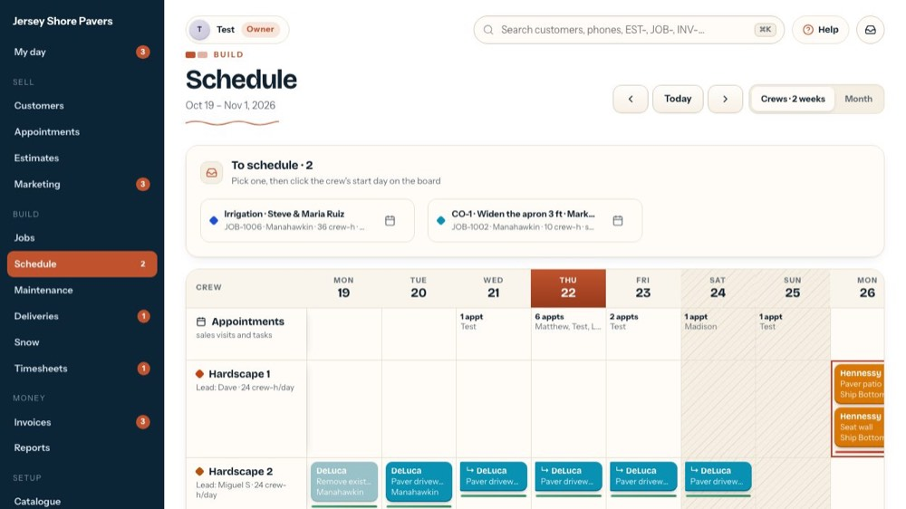
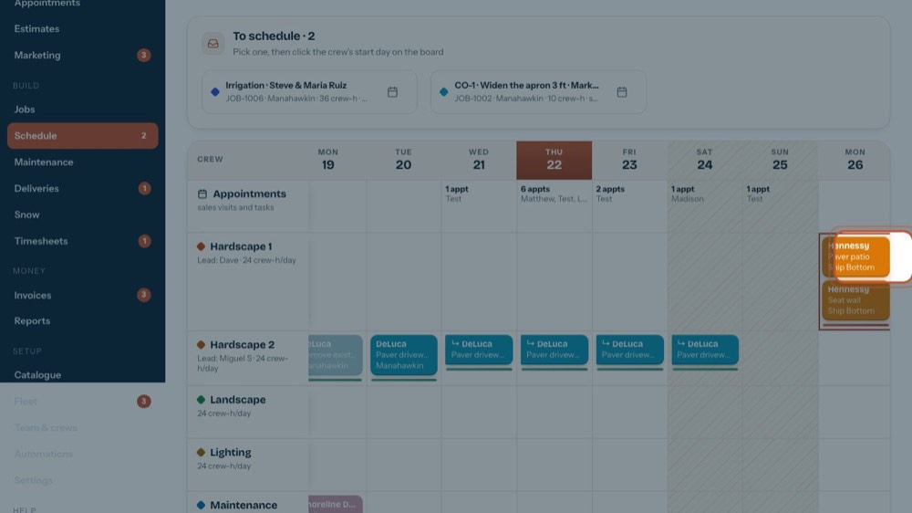
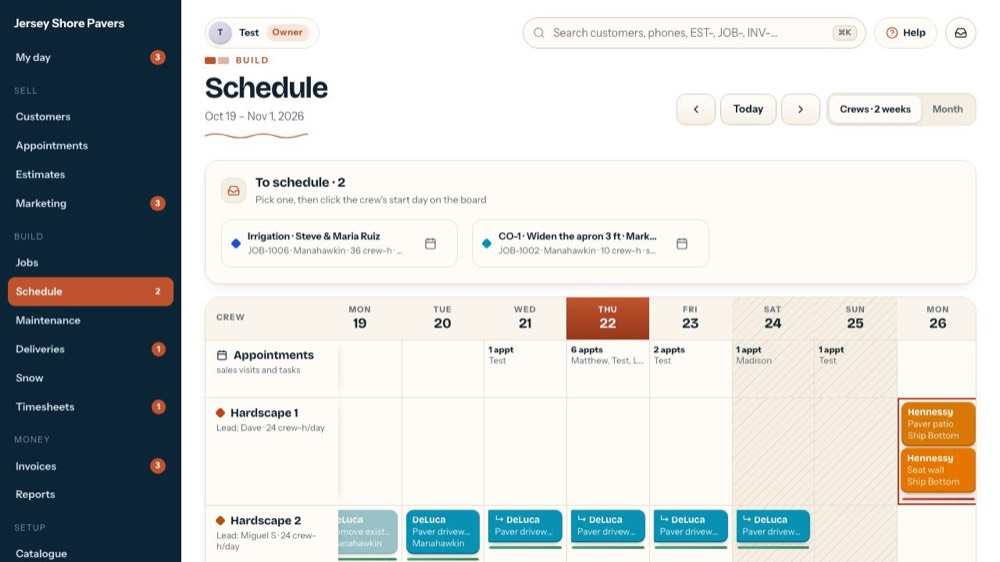
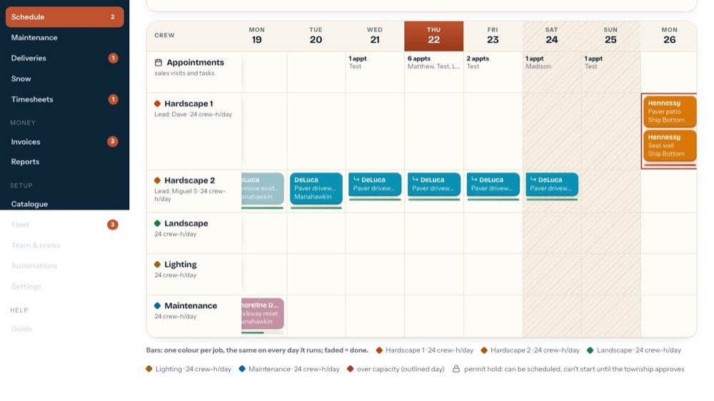

Schedule work, assign crews, move it (rain days)
In the office app, press Help and type schedule work, assign crews, move it
: the tour plays on your own screen, with your own data.
-

1Waiting to be scheduled
Every sold piece of work waits here until it has a crew and a start day.
-
 2
2Drag it onto a crew
Drag it onto a crew's start day (or click it, then the day). The days come from the crew-hours ÷ the crew size.
-

3Move it any time
Drag a block to another day or crew; a multi-day job moves together. A lock means it waits on a permit.
-

4Month view
The whole month, coloured by crew.
-

5What the colours mean
Each job its own colour on the board; each crew its own colour in the month.